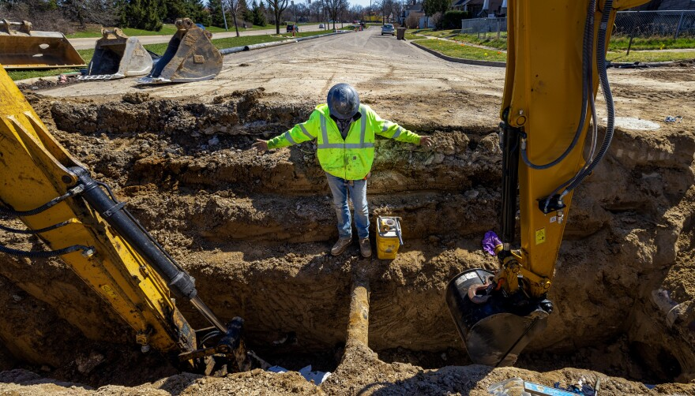

Construcción de Infraestructura de Agua
Construimos y apoyamos sistemas críticos de distribución de agua con controles de calidad diseñados para durabilidad y cumplimiento.
- Construcción de sistemas de agua potable
- Instalación de tubería sanitaria y pluvial
- Zanjas, relleno e integración de válvulas
- Apoyo para conexiones listas para contadores y utilidades